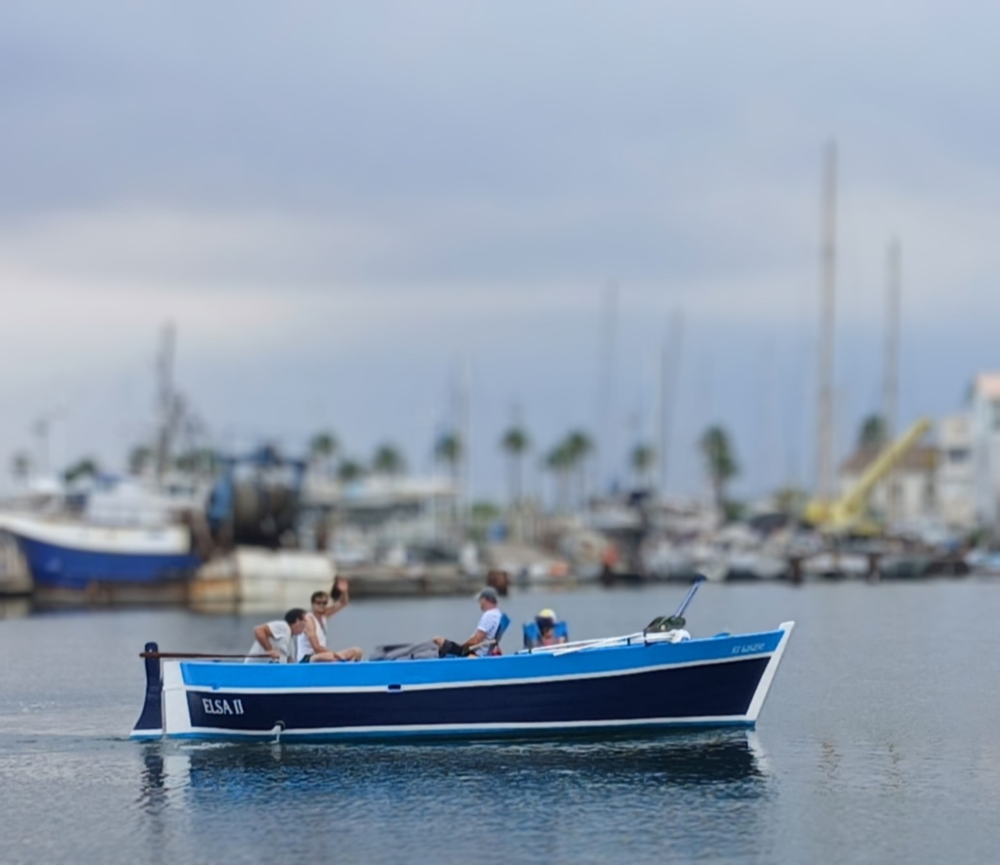

Prends le large.
Vis la Méditerranée.
Prépare tes sorties, consulte la météo, découvre le littoral et garde tes repères de pêche à portée de main.

ELSA II · BATEAU AMBASSADEURCarte du littoral
Du Grau-du-Roi à Sète, avec les repères de la Camargue et de Thau.
Important : carte de découverte uniquement. Elle ne remplace pas une carte marine officielle, les instruments de bord, les avis aux navigateurs ni les arrêtés. Les repères ne constituent ni une route nautique ni une autorisation de mouillage.
Météo marine
Vent, rafales, vagues et houle — données indicatives du modèle météo.
Sources : Open-Meteo météo · Open-Meteo Marine.
Ports, criques & paysages
Des idées d’escales et de découvertes sur notre zone pilote.
Mes repères de pêche
Les secteurs affichés sont indicatifs. Enregistre tes propres observations.
Respecte les tailles minimales, périodes, quotas, réserves et règles locales. Les repères de cette application ne garantissent aucune présence de poisson.
Mes favoris
Les lieux enregistrés sur cet appareil.
Mon carnet
Retrouve tes prises et observations enregistrées sur cet appareil.